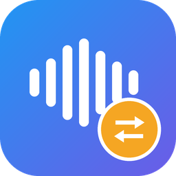

Arraste, converta, pronto. Conversão automática entre WAV e MP3 com qualidade de estúdio — sem precisar abrir o Pro Tools.
No Mac, na primeira abertura: clique com o botão direito no app → Abrir.
Código fonte em github.com/eduardokreca/conversor-audio.